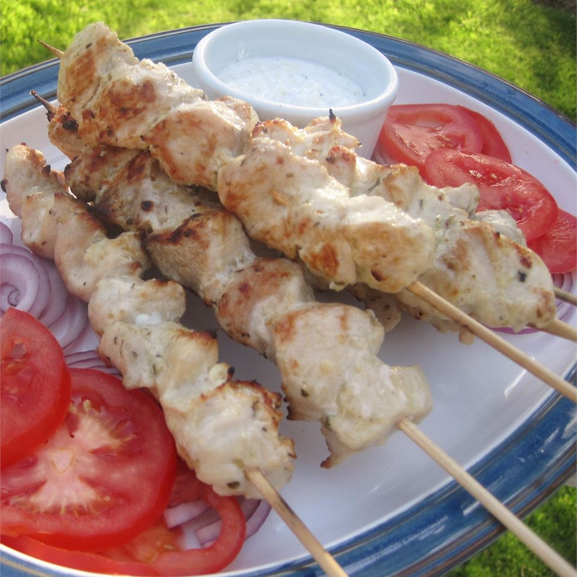

Chicken souvlaki with tzatziki sauce

Steps
- Combine 1/4 cup olive oil, lemon juice,
2 cloves minced garlic, oregano, and 1/2 t
easpoon salt in a large resealable bag.
Add chicken, coat with the marinade, squeeze
out excess air, and seal the bag. Marinate
in the refrigerator for 2 hours.
- Mix yogurt, cucumber, 1 tablespoon olive
oil, vinegar, 1 clove minced garlic, and
1 pinch salt together in a bowl.
Refrigerate tzatziki sauce for flavors
to blend, 1 to 2 hours.
- Preheat an outdoor grill for medium-high
heat and lightly oil the grate. Soak
wooden skewers in a bowl of water for
about 15 minutes.
- Remove chicken from marinade and
thread onto the soaked skewers.
Discard unused marinade.
- Cook the skewers on the preheated
grill, turning frequently until nicely
browned on all sides and chicken is
no longer pink in the center, about
8 minutes per side. Serve with
tzatziki sauce.